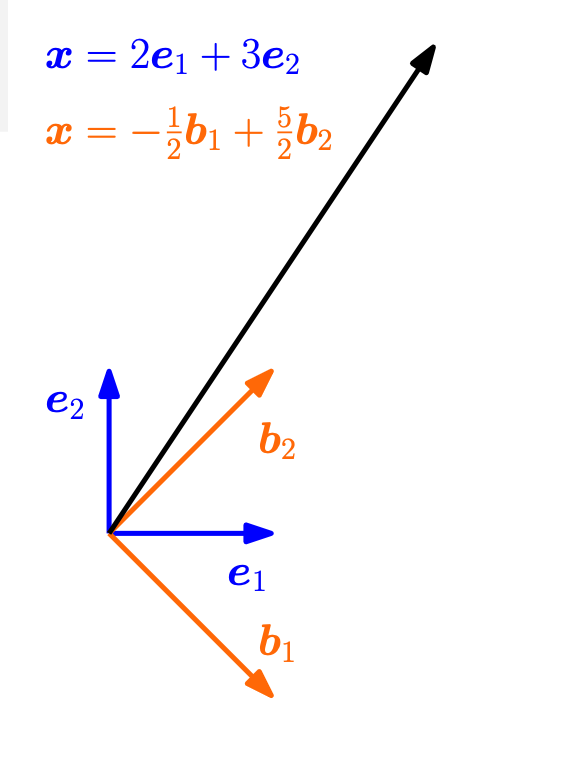

11 선형사상의 변환행렬
아래 열거된 사이트는 선형 변환을 시각적으로 설명하는 도구를 제공한다.
11.1 좌표
벡터공간 \(V\) 의 차원이 \(dim(V)=n\) 이고 주어진 기저를 \(B = (\pmb b_1, \pmb b_2, \dots, \pmb b_n)\) 이라고 하자. 참고로 기저 \(B\) 는 순서가 있는 집합(oerdered set)이다.
벡터공간 \(V\) 의 원소 \(\pmb x \in V\) 는 다음과 같이 기저 \(B\) 의 선형조합으로 나타난다,
\[ \pmb x = \alpha_1 \pmb b_1 + \alpha_2 \pmb b_2 + \dots + \alpha_n \pmb b_n \tag{11.1}\]
참고로 \(\pmb x\)를 식 11.1 과 같이 나타낼 수 있는 \(\alpha_1,\alpha_2,\dots,\alpha_n\) 의 조합은 유일하다.
정의 11.1 (좌표(coordinator)) 벡터공간 \(V\) 의 원소 \(\pmb x \in V\) 가 기저 \(B\) 에 대하여 식 11.1 으로 표현된다면 \(\alpha_1,\alpha_2,\dots,\alpha_n\) 를 \(\pmb x\) 의 좌표(coordinator) 라고 부른다.
또한 벡터공간 \(V\) 의 모든 원소에 대하여 좌표를 대응해주는 좌표사상(coordinator map) 라고 부르고 다음과 같이 함수 \(f: V \rightarrow \RR^n\) 로 나타낼 수 있다.
\[ f(\pmb x) = \pmb \alpha = \begin{bmatrix} \alpha_1 \\ \alpha_2 \\ \vdots \\ \alpha_n \end{bmatrix} \]
\(\blacksquare\)
11.1.1 예제 (부교재 Example 2.20)
이차원 벡터공간 \(V = \RR^2\) 에서 다음과 같은 하나의 벡터를 생각하자.
\[ \pmb x = \begin{bmatrix} 2 \\ 3 \end{bmatrix} \]
이제 다음과 같은 표준 기저(standard basis) \(B = (\pmb e_1, \pmb e_2)\) 를 생각하자.
\[ B= (\pmb e_1, \pmb e_2) = \left ( \begin{bmatrix} 1 \\ 0 \end{bmatrix} , \begin{bmatrix} 0 \\ 1 \end{bmatrix} \right ) = \pmb I \]
이제 \(\pmb x\) 를 기저 \(B\) 에 대하여 식 11.1 으로 표현하면 다음과 같다.
\[ \pmb x =\begin{bmatrix} 2 \\ 3 \end{bmatrix} = 2 \pmb e_1 + 3 \pmb e_2 = 2 \begin{bmatrix} 1 \\ 0 \end{bmatrix} + 3 \begin{bmatrix} 0 \\ 1 \end{bmatrix} = \begin{bmatrix} 1 & 0\\ 0 & 1 \end{bmatrix} \begin{bmatrix} 2 \\ 3 \end{bmatrix} =\pmb B \pmb \alpha_B \tag{11.2}\]
따라서 기저 \(B\) 에 대하여 \(\pmb x\) 의 좌표 \(\pmb \alpha\)는 다음과 같다.
\[ \pmb \alpha \equiv \pmb \alpha_B = \begin{bmatrix} 2 \\ 3 \end{bmatrix} \]
이제 기저를 다음과 같이 \(\tilde B\) 로 바꾸어 보자.
\[ \tilde B= (\pmb b_1, \pmb b_2) = \left ( \begin{bmatrix} 1 \\ -1 \end{bmatrix} , \begin{bmatrix} 1 \\ 1 \end{bmatrix} \right ) \]
이제 \(\pmb x\) 를 기저 \(\tilde B\) 에 대하여 식 11.1 으로 표현하면 다음과 같다.
\[ \pmb x = \begin{bmatrix} 2 \\ 3 \end{bmatrix} = (-1/2) \pmb b_1 + (5/2) \pmb b_2 = (-\frac{1}{2}) \begin{bmatrix} 1 \\ -1 \end{bmatrix} + (\frac{5}{2}) \begin{bmatrix} 1 \\ 1 \end{bmatrix} = \begin{bmatrix} 1 & 1\\ -1 & 1 \end{bmatrix} \begin{bmatrix} -1/2 \\ 5/2 \end{bmatrix} = \tilde {\pmb B} \pmb \alpha_{\tilde B} \tag{11.3}\]
따라서 기저 \(\tilde B\) 에 대하여 \(\pmb x\) 의 좌표 \(\pmb \alpha\)는 다음과 같다.
\[ \pmb \alpha \equiv \pmb \alpha_{\tilde B} = \begin{bmatrix} -\frac{1}{2} \\ 5 \end{bmatrix} \]

이 예제에서 본 것처럼 기저가 변하면 동일한 원소에 대해서도 좌표가 달라진다.
만약 기저가 변했다면 좌표는 어떻게 변하는지를 알아야 한다. 이차원 공간의 임의의 벡터 \(\pmb x\) 에 대하여 두 기저 \(B\) 와 \(\tilde B\) 에 대하여 식 11.2 과 식 11.3 의 관계를 이용하면 다음과 같은 식을 얻을 수 있다.
\[ \begin{aligned} & \quad \tilde {\pmb B} \pmb \alpha_{\tilde B} = \pmb B \pmb \alpha_B \\ \Rightarrow & \quad \pmb \alpha_{\tilde B} = \tilde {\pmb B}^{-1} \pmb B \pmb \alpha_B \\ \Rightarrow & \quad \tilde {\pmb B} \pmb \alpha_{\tilde B} =\tilde {\pmb B}^{-1} \pmb I \pmb \alpha_B \\ \Rightarrow & \quad \tilde {\pmb B} \pmb \alpha_{\tilde B} =\tilde {\pmb B}^{-1} \pmb \alpha_B \\ \Rightarrow & \quad \pmb \alpha_{\tilde B} = \begin{bmatrix} 1 & 1 \\ -1 & 1 \end{bmatrix}^{-1} \pmb \alpha_B \\ \Rightarrow & \quad \pmb \alpha_{\tilde B} = \begin{bmatrix} 1/2 & -1/2 \\ 1/2 & 1/2 \end{bmatrix} \pmb \alpha_B \end{aligned} \] 따라서 기저가 변하면 좌표는 위와 같은 식으로 변한다.
11.2 변환행렬
11.2.1 정의
이제 두 개의 벡터공간 \(V\) 와 \(W\) 에 대하여 선형사상 \(\Phi\) 가 정의되어 있고
\[ \Phi : V \rightarrow W \]
벡터공간 \(V\) 와 \(W\) 에 대한 기저가 각각 \(B=(\pmb b_1, \pmb b_2, \dots, \pmb b_n)\) 와 \(C = (\pmb c_1, \pmb c_2, \cdots, \pmb c_m)\) 이라고 하자.
이제 벡터공간 \(V\) 의 기저에 대한 선향사상의 원소가 벡터공간 \(W\) 의 기저로 다음과 같이 표현된다고 하자.
\[ \begin{aligned} \Phi(\pmb b_1) &= a_{11} \pmb c_1 + a_{21} \pmb c_2 + \cdots + a_{m1} \pmb c_m \\ \Phi(\pmb b_2) &= a_{12} \pmb c_1 + a_{22} \pmb c_2 + \cdots + a_{m2} \pmb c_m \\ \cdots \\ \Phi(\pmb b_n) &= a_{1n} \pmb c_1 + a_{2n} \pmb c_2 + \cdots + a_{mn} \pmb c_m \\ \end{aligned} \tag{11.4}\]
식 11.4 에서 나타난 계수 \(a_{ij}\) 을 \(m \times n\)-행렬 \(\pmb A_{\Phi}\) 로 다음과 같이 표현할 수 있다.
\[ \pmb A_{\Phi} = \begin{bmatrix} a_{11} & a_{12} & \cdots & a_{1n} \\ a_{21} & a_{22} & \cdots & a_{2n} \\ \vdots & \vdots & \ddots & \vdots \\ a_{m1} & a_{m2} & \cdots & a_{mn} \\ \end{bmatrix} \tag{11.5}\]
식 11.4 에 나타난 행렬 \(\pmb A_{\Phi}\) 를 변환행렬(transformation matrix)이라고 부르며 이 변환행렬은 각 벡터공간의 기저 \(B\) 와 \(C\)에 따라 정의되는 것에 유의하자.
11.2.2 좌표와 변환행렬
만약 \(\hat {\pmb x}\) 가 벡터공간 \(V\) 에서 기저 \(B\) 에 대한 원소 \(\pmb x\)의 좌표이고
\[ \pmb x = \pmb B \hat {\pmb x} \]
\(\hat {\pmb y}\) 가 벡터공간 \(W\) 에서 기저 \(C\) 에 대한 선형사상 \(\pmb y = \Phi(\pmb x)\)의 좌표이면
\[ \pmb y = \pmb C \hat {\pmb y} \]
두 좌표 \(\hat {\pmb x}\) 와 \(\hat {\pmb y}\) 사이의 관계는 다음과 같다.
\[ \hat {\pmb y} = \pmb A_{\Phi} \hat {\pmb x} \tag{11.6}\]
참고로 \(\RR^n\) 에서 \(\RR^m\) 으로의 선형사상 \(\Phi: \RR^n \rightarrow \RR^m\) 를 생각하고 각 공간의 기저를 표준 기저(standard basis)로 고려하면 변환행렬 \(\pmb A_{\Phi}\) 는 선형사상 \(\pmb y = \Phi(\pmb x )\) 을 나타내는 \(m \times n\) 행렬이다.
\[ \pmb y = \pmb A_{\Phi} \pmb x \tag{11.7}\]
11.2.3 예제
- 부교재 Example 2.21 (Transformation Matrix) 참조
- 부교재 Example 2.22 (Linear Transformations of Vectors) 참조